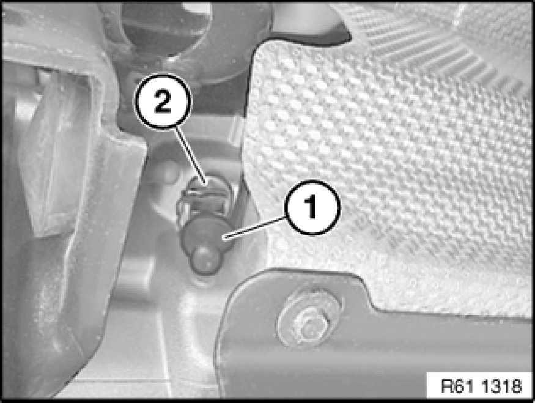

Removing and Installing/Replacing Switch for Reversing Light
61 31 270 - Removing and installing/replacing switch for reversing light

Unfasten plug connection (1) and disconnect.
Unfasten switch for reversing light (2), tightening torque 23 41 5AZ [1][2]Automatically Shifted Manual Transmission/Transaxle.